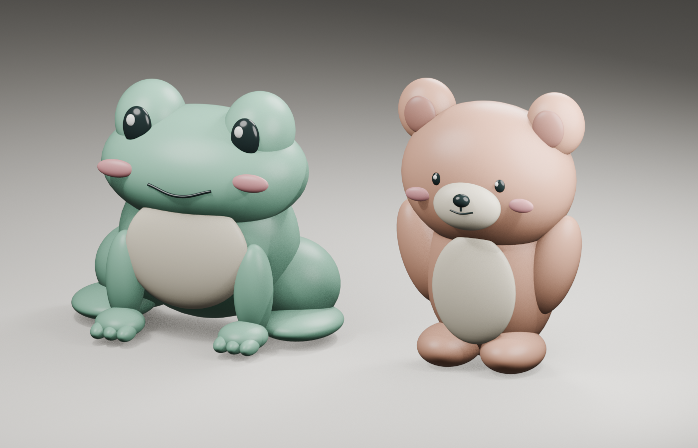

Pebble Frog
A wide rounded head, domed eye mounds, plump haunches and separate soft facial features.
Drag to rotate · scroll or pinch to zoom.
Download the actual GLB model
Pebble Frog and Coral Bear are new, self-initiated Blender studies of soft silhouettes, domed features and simple facial expressions. The views below are renders of the same geometry available in each interactive viewer.
These are digital form studies. They have not been physically printed or delivered as commissioned work.

A wide rounded head, domed eye mounds, plump haunches and separate soft facial features.
Drag to rotate · scroll or pinch to zoom.
Download the actual GLB model
A large soft head, rounded ear rims, a raised muzzle and simple pill-shaped limbs.
Drag to rotate · scroll or pinch to zoom.
Download the actual GLB model